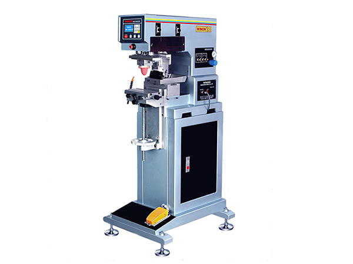
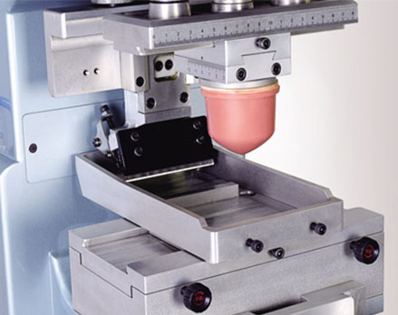
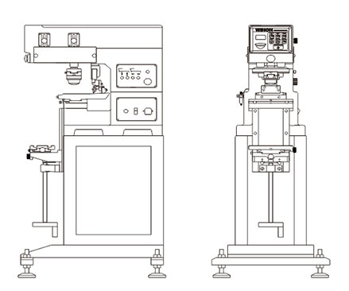

Plastic Products
Electronic housings, containers, and industrial parts.

PAD PRINTING MACHINE
Winon Industrial Co., Ltd. — Hong Kong
| Model | WN-121A |
|---|---|
| Printing Color | 1 Color |
| Machine Type | Automatic pad printing machine |
| Suitable Materials | Plastic, metal, glass, and industrial components |
Contact us for the complete technical specification, available configurations, and production requirements.

BUILT FOR PRODUCTION

The Winon WN-121A is suitable for printing on a wide range of industrial products.
Electronic housings, containers, and industrial parts.
Pens, gifts, and advertising products.
Bottles, caps, and packaging components.
Automotive and precision parts.
Contact Printway Marketing & Services for pricing, machine demonstrations, spare parts, consumables, and technical support.
Request a Quote